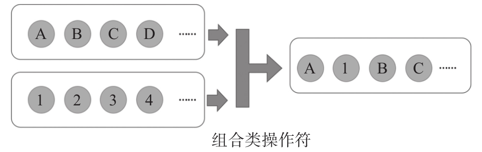

RxJS提供了一系列可以完成Observable组合操作的操作符，这一类操作符称为合并类（combination）操作符，这类操作符都有多个Observable对象作为数据来源，把不同来源的数据根据不同的规则合并到一个Observable对象中。
不少合并类操作符都有两种形式，既提供静态操作符，又提供实例操作符。当我们合并两个数据流，假设分别称为source1$和source2$，也就可以说source2$汇入了source1$，这时候用一个source1$的实例操作符语义上比较合适；在某些场景下，两者没有什么主次关系，只是两个平等关系的数据流合并在一起，这时候用一个静态操作符更加合适。
前面我们用江河的汇流来比喻数据流的组合，实际上，在RxJS的世界里，数据流的组合并不像现实世界中两条河流在一起这么简单。不同Observable的数据如何汇合到一个Observable对象有各种规则，有的汇合的确就像是两条河流在一起；有的汇合就像是两条车道上的车流汇合必须要遵守规矩依次交替通行；有的汇合就像是排队登机，头等舱乘客登机完毕经济舱的乘客才能开始登机。
合并类操作符的基本功能如图5-1所示，把多个数据流中的数据汇合到一个数据流中，途中只展示了两个上游数据流，实际上，大部分合并类操作符都能够汇合超过两个以上的上游数据流。
接下来，我们就来介绍实现各种组合规则的操作符。

图5-1 合并数据流示意图